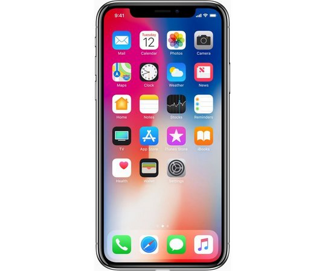
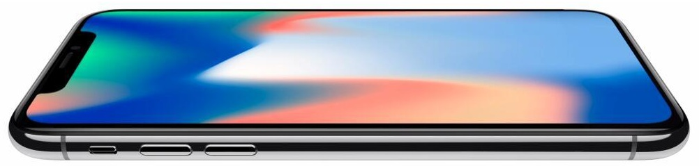
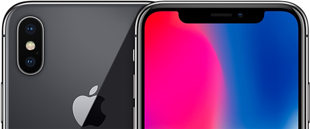

É poderoso em cada detalhe. E poderoso como um todo.
Apresentação
Saiba tudo sobre o Iphone X
Este é o X
A visão da Apple sempre foi criar um iPhone que fosse totalmente tela. Tão envolvente que fizesse o aparelho desaparecer na experiência. E tão inteligente que respondesse ao seu toque, voz ou mesmo olhar. O iPhone X é esta visão transformada em realidade. Diga alô para o futuro.

Design e tela
Tela Super Retina
A inovadora tela Super Retina de 5,8 polegadas foi criada para caber na mão e encher os olhos
Tela infinita
Os rumores não estavam errados, além de uma tela infinita, o novo iDevice da Apple vem equipado com a tecnologia Super Retina HD, que é de modo rápido, uma tela OLED ligeiramente melhorada, fazendo com que o telefone economize energia e mostre cores bem mais reais.

Além disso, a tela conta com 5.8 polegadas, e o estranho recorte na parte superior do aparelho, onde está localizado as câmeras frontais e sensores para o Face ID. Apesar de possuir uma tela maior que a do iPhone 7 Plus, o novo iPhone X é menor que este devido a ausência de bordas.
Novo design

O iPhone X é construído com o vidro mais resistente já usado em um smartphone — na frente e atrás. Ele tem moldura de aço inoxidável de qualidade cirúrgica, recarga sem fio e toda a estrutura é protegida contra água e poeira.
Carregamento sem fio
O novo Smartphone da maçã vem equipado com carregamento Wireless, o que pode ter forçado a Apple a adicionar um acabamento em vidro em seus novos lançamentos. Apesar de suportar o carregamento sem fio, o Dock não é incluso na caixa, sendo vendido separadamente pela Apple.
Também foi apresentado o novo AirPower, carregador wireless maior, e que suporta o carregamento de mais de um iDevice ao mesmo tempo.